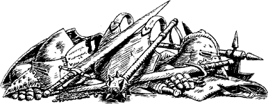

340
As you land your killing blow, the druid crashes down upon the floor, driving his magical blade deep into the flagstones. For a moment he writhes in the throes of death; then he stiffens and lies still.
As you step away from his body you suddenly sense a new danger. A number of the congregation are approaching the door, prompted to investigate by the noise of your fight. Quickly you hurry to the section of wall from where the druid appeared and search for a way to make it open once more. You discover a lever and, within seconds of pulling it, the concealed panel glides inwards, allowing you access to a secret passage. You enter, dragging the body of the High Priest behind you by the heels, and then push shut the panel just as the inquisitive congregation push open the vestibule door.
You abandon the body and pass along the narrow passageway, descending by steps and slopes until you reach a chamber which is lit by two large black candles, fixed into holes in the surface of a marble slab. On a nearby table lie the following items:
- 2 Arrows
- Enough food for 2 Meals
- 2 Daggers
- 1 Sword
- Mirror
- Rope
If you wish to take any of these items, remember to adjust your Action Chart accordingly.
{kind=link}

Opposite the slab there is a door which opens into a narrow corridor. You step through and follow this corridor towards a distant chamber.